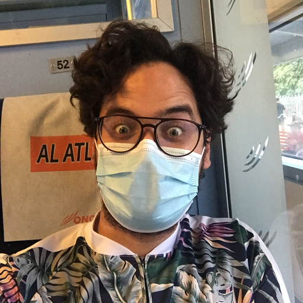
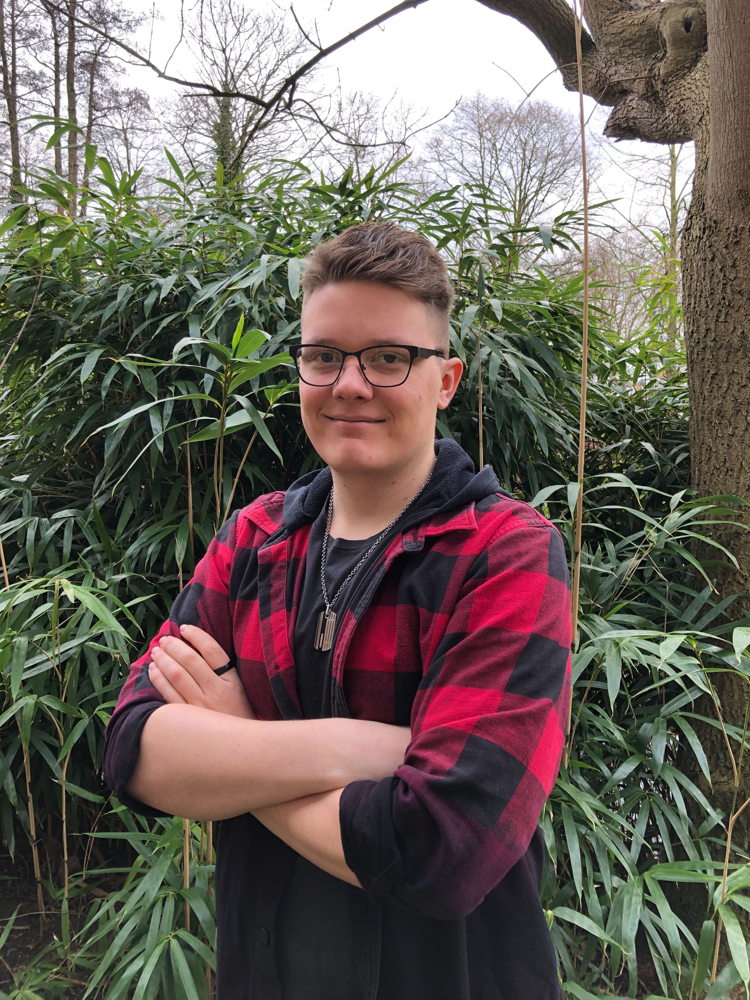
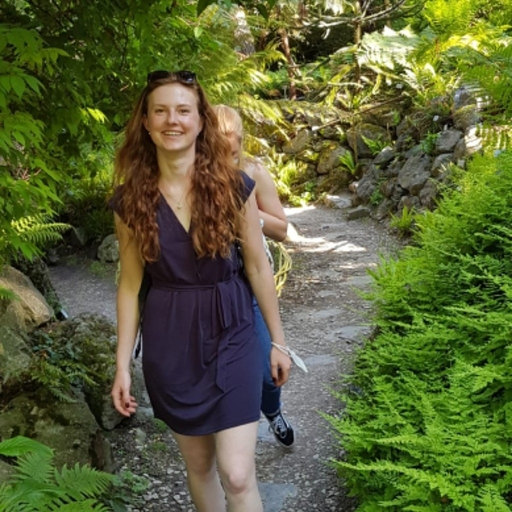

Team
 Mohammed “Simo”
Errbii (PhD student) → Population genomics and genome evolution in
ants.
As a researcher, I am mainly interested in describing genetic
diversity, and exploring how it is generated and its consequences on
organisms. For this, I use various approaches including, but not
exclusively, population genomics, comparative genomics and linkage
mapping. Most of my current work focuses on the invasive ant
Cardiocondyla obscurior, which is characterized by its unique
genome architecture, offering an unprecedented opportunity to study the
genome dynamics and its consequences in this species. Additionally, I am
working with the ant Pogonomyrmex californicus, which is
characterized by a social polymorphism similar to the one described for
Solenopsis and Formica, offering the opportunity to study
the evolutionary dynamics of supergenes and their regulated elaborate
phenotypes. I am also involved in many collaborative projects that our
lab has with other groups working on non ants species (e.g. the red
flower beetle Tribolium castaneum and the coffee berry borer
Hypothenemus hampei). In the past, I have also worked with a
semiaquatic insect (Microvelia longipes) which is an excellent
system to study the evolution of exaggerated sexual traits. I am a huge
fan of Japanese anime and I can talk about it for days. In my free time,
I enjoy cooking together and eating with friends. I also like to keep my
eyes open for new adventures.
 Esther van den
Boes (PhD student) → Rapid evolution and TE-induced genetic
variation in invasive ants.
Esther van den
Boes (PhD student) → Rapid evolution and TE-induced genetic
variation in invasive ants.
The constant need to adapt is met
differently by each individual, population, or species. In some cases,
the success at adapting is obvious, e.g. the behavioral adaptation in
humans, in other instances though it can be quite puzzling. Our model
organism, the invasive ant species Cardiocondyla obscurior,
successfully colonizes new habitats even though genetic variation is
low. With my project, we aim to uncover how phenotypic plasticity,
cryptic variation and transposable elements (TEs) interplay during this
rapid evolution and how especially TEs function as genetic innovators
during adaptation.
 Janina Rinke (PhD
student) → The impact of horizontal gene transfers in ants.
Janina Rinke (PhD
student) → The impact of horizontal gene transfers in ants.
I
am interested in the evolution of social insects and particularly in
understanding the genetic basis of social insect evolution and their
endosymbionts. In the past, I have been investigating the mechanisms of
worker policing and worker reproduction in Camponotus ants. My current
research project focuses on horizontally transferred genes in ants
deriving from bacteria and possible new, interesting functions of these
HGTs within ants. I am using large-scale sequencing data from the Global
Ant Genomics Alliance to find high-quality HGT candidates with
bioinformatic methods and genomic approaches. My research tackles the
question whether HGTs play a significant role in ants leading to
evolutionary advances. For this, I am using RNAseq data to quantify
expression of HGTs as well as molecular methods to determine the
existence of high-quality HGTs.
 Joshua Grebe (MSc
student) → Canalization and phenotypic robustness of
superorganisms.
 Sandra Tretter
(MSc student) → Micromorphology in ants, with an emphasis on social
parasites.
 Lukas Schrader
(PI)
Lukas Schrader
(PI)
My goal as a researcher is understanding the interplay
between “hard-wired” genomic traits, environmental cues, “soft-wired”
regulatory mechanisms, and the phenotype.
Former Members:
- Lena Wiegert: Canalization and phenotypic diversification in Cardiocondyla obscurior
- Svenja Kieckhäfer: The role of cuticular hydrocarbons in desiccation resistance in ants
- Eyleen Wiese: The genetic basis of CHC biosynthesis in ants
- Miles Winter: HSP90/HSP70 in Cardiocondyla obscurior
- Maja Drakula: The role of CHCs in aggressive interactions in Cardiocondyla obscurior
- Rebecca Rothering: The evolutionary significance of TEs in ants
- Nic Schröder: Ant virus evolution
Copyright © 2021 Lukas Schrader